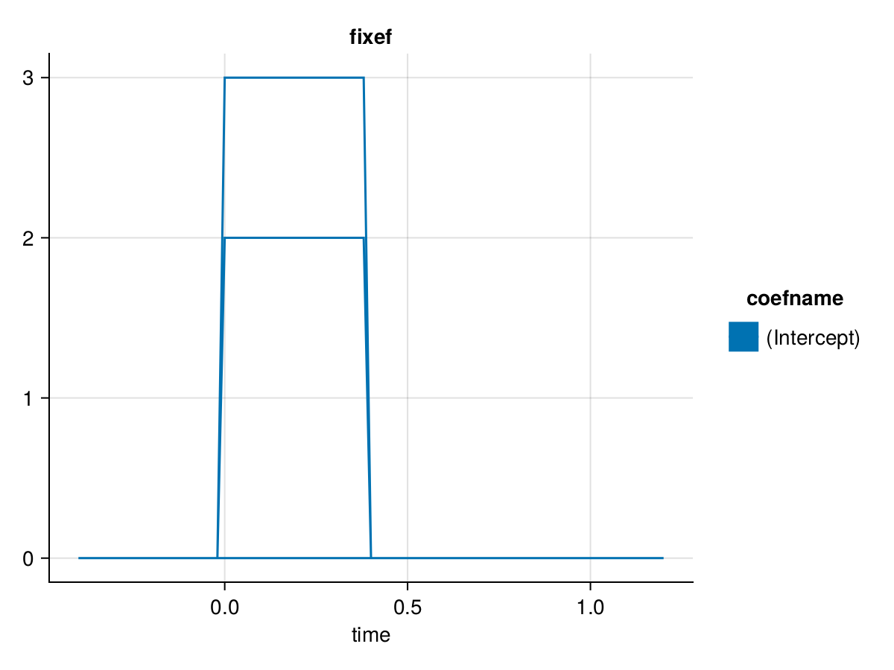

How to model multiple events
In case of overlapping data, we often need to plot multiple events.
Load Example Data
using Unfold
using UnfoldMakie, CairoMakie
using DataFrames
using StatsModels
using MixedModels
include(joinpath(dirname(pathof(Unfold)), "../test/test_utilities.jl") ) # to load data
dat, evts = loadtestdata("test_case_4b");
evts[1:5,:]5×3 DataFrame
| Row | latency | type | intercept |
|---|---|---|---|
| Int64 | String7 | Int64 | |
| 1 | 38 | eventA | 1 |
| 2 | 50 | eventB | 1 |
| 3 | 89 | eventA | 1 |
| 4 | 102 | eventB | 1 |
| 5 | 144 | eventA | 1 |
As you can see, there are two events here. EventA and EventB. Both are in the column type in which the toolbox looks for different events by default.
Specify formulas and basisfunctions
bf1 = firbasis(τ=(-0.4,.8),sfreq=50,name="stimulusA")
bf2 = firbasis(τ=(-0.2,1.2),sfreq=50,name="stimulusB")name: stimulusB
collabel: time
colnames: [-0.2, -0.18, -0.16, -0.14, -0.12, -0.1, -0.08, -0.06, -0.04, -0.02, 0.0, 0.02, 0.04, 0.06, 0.08, 0.1, 0.12, 0.14, 0.16, 0.18, 0.2, 0.22, 0.24, 0.26, 0.28, 0.3, 0.32, 0.34, 0.36, 0.38, 0.4, 0.42, 0.44, 0.46, 0.48, 0.5, 0.52, 0.54, 0.56, 0.58, 0.6, 0.62, 0.64, 0.66, 0.68, 0.7, 0.72, 0.74, 0.76, 0.78, 0.8, 0.82, 0.84, 0.86, 0.88, 0.9, 0.92, 0.94, 0.96, 0.98, 1.0, 1.02, 1.04, 1.06, 1.08, 1.1, 1.12, 1.14, 1.16, 1.18, 1.2]
kerneltype: FIRBasis
times: [-0.2, -0.18, -0.16, -0.14, -0.12, -0.1, -0.08, -0.06, -0.04, -0.02, 0.0, 0.02, 0.04, 0.06, 0.08, 0.1, 0.12, 0.14, 0.16, 0.18, 0.2, 0.22, 0.24, 0.26, 0.28, 0.3, 0.32, 0.34, 0.36, 0.38, 0.4, 0.42, 0.44, 0.46, 0.48, 0.5, 0.52, 0.54, 0.56, 0.58, 0.6, 0.62, 0.64, 0.66, 0.68, 0.7, 0.72, 0.74, 0.76, 0.78, 0.8, 0.82, 0.84, 0.86, 0.88, 0.9, 0.92, 0.94, 0.96, 0.98, 1.0, 1.02, 1.04, 1.06, 1.08, 1.1, 1.12, 1.14, 1.16, 1.18, 1.2, 1.22]
shiftOnset: -10
For each event, we have to specify a basisfunction and a formula. We could use the same basis and the same formulas though
f = @formula 0~1FormulaTerm
Response:
0
Predictors:
1Next, we have to specify for each event, what is the formula and what is the basisfunction we want to use
bfDict = Dict("eventA"=>(f,bf1),
"eventB"=>(f,bf2))Dict{String, Tuple{StatsModels.FormulaTerm{StatsModels.ConstantTerm{Int64}, StatsModels.ConstantTerm{Int64}}, FIRBasis}} with 2 entries:
"eventA" => (0 ~ 1, name: stimulusA…
"eventB" => (0 ~ 1, name: stimulusB…Finally, fitting & plotting works the same way as always
m = Unfold.fit(UnfoldModel,bfDict,evts,dat,solver=(x,y) -> Unfold.solver_default(x,y;stderror=true),eventcolumn="type")
results = coeftable(m)
plot_erp(results;stderror=true,mapping=(;col=:group))